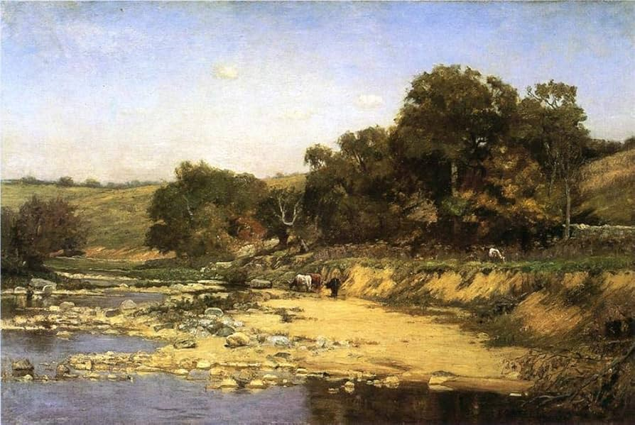
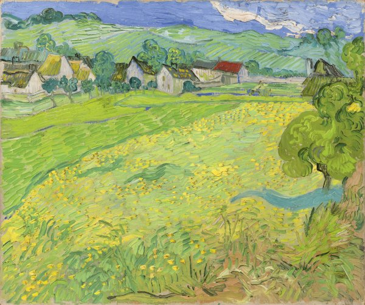
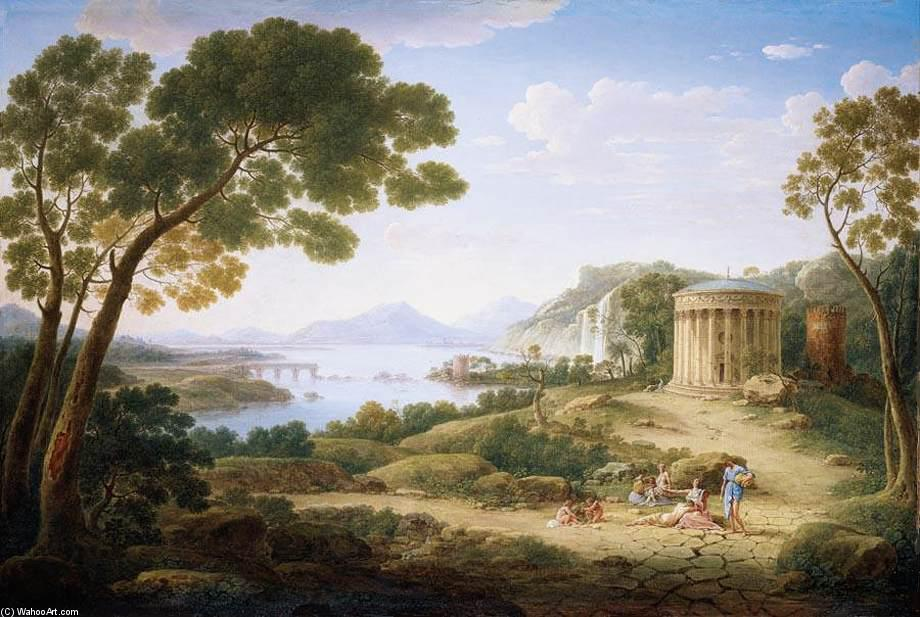
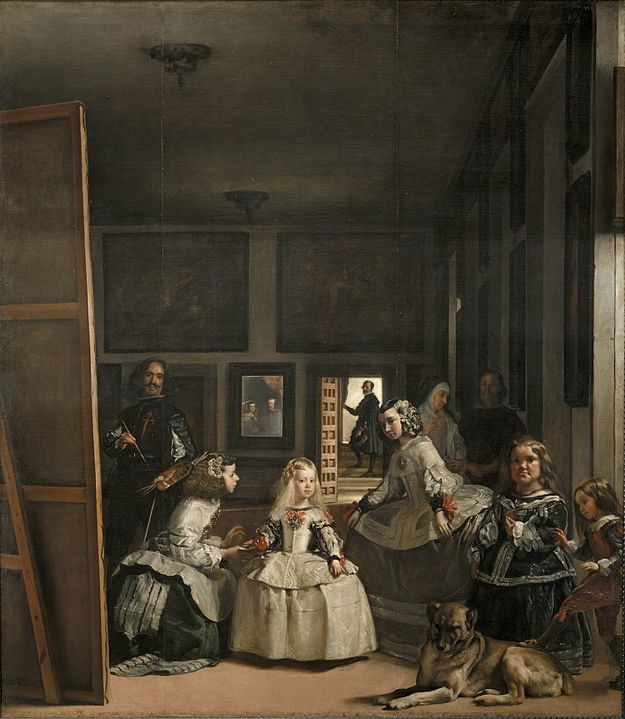
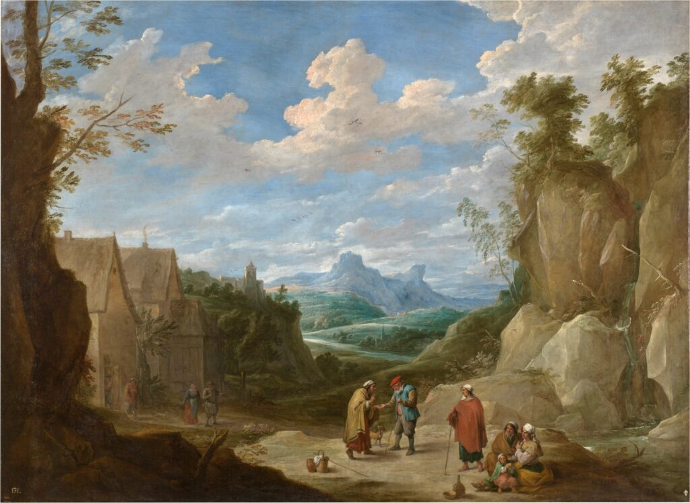

01
01
Prácticas correctas de gestión de archivos
Workflow

02
02
Escenarios de luz y sombra para visualización
Iluminación

03
03
Composición lineal sobre composición geométrica
Composición

04
04
Escenarios complejos de luz y sombra
Iluminación

05
05
Sobre el color y por qué no es lo que parece
Color

06
06
Curaduría: narrativa de imágenes en grupo
Curaduría